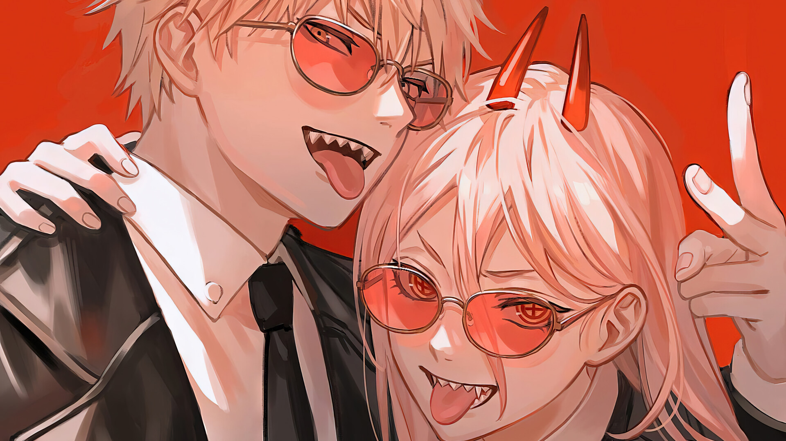

Selamat datang di kelas TI21K1
Program studi S1 - Teknik Informatika
Heading 1
Heading 2
Heading 3
Heading 4
Heading 5
Heading 6
STTIKOM INSAN UNGGUL
STTIKOM Insan Unggul merupakan Perguruan Tinggi yang berlokasi di Kota Cilegon, STTIKOM Insan Unggul memiliki 4 Program studi diantaranya :
S1 - Teknik Informatika
S1 - Sistem informasi
D3 - Manajemen Informatika
D3 - Komputerisasi Akuntansi
RIWAYAT HIDUP
Nama : Dwi Prasetyo
Tempat, Tgl Lahir : Konoha, 23 Juni 4270
No. Handphone : 081282583089 / 081282273445
Alamat : Gotei 12 - Distrik 11
DWI PRASETYO
